UCLA coursework, 2014 to 2018
Modeling the Oasis of the Dry Great Basin: Predicting Water Values of Mono Lake
A Basic Understanding of Mono Lake
Los Angeles began diverting water from Mono Lake in 1941. The goal of this predictive model is to examine the effect of different export policies on the elevation of Mono Lake. The differing models will project future sizes of the lake given different assumptions about the amount of water exported to Los Angeles. Through this analysis, the viewer will be able to ascertain how the lake level responds to changes in export policies - as well as derive a sustainable level of export. This viable tradeoff between lake level oscillations and tradeoff policies will be realized when the Mono Lake model indicates a stable equilibrium.
The figure below depicts historical elevations of Mono Lake:

Modeling Mono Lake - A Simplistic Model
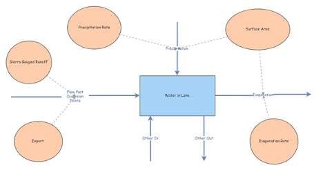
This model illustrates a basic understanding - a simple interpretation of the varying inputs and outputs that dictate the amount of water in Mono Lake. However, as the viewer will see with the resulting graph below, this model is far too simplistic to produce tangible results.
The parameter values for the model are as follows:
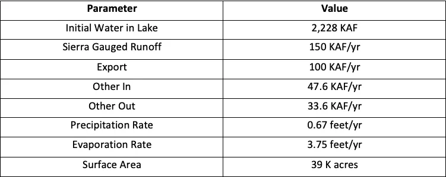
The volume of water in Mono Lake is measured in thousands of acre-feet (KAF). The model is run by years, so the units for the flows in the model will be KAF/year. Precipitation and Evaporation parameters will be measured by feet/year. Precipitation is calculated by multiplying the surface area by the precipitation rate. Evaporation is calculated in the same manner - surface area * evaporation rate. The surface area is set to 39,000 acres (39K acres), the same as it appeared in 1990.
The flow of water in Mono Lake is achieved by subtracting 'Export' from the Lake's main flow of water - the runoff from the Sierra Nevada.
The Stock of the model is the amount of water in the Mono Lake.
The Inputs include: Runoff from Sierra Nevada, Precipitation onto the lake, and an 'Other Out' variable that includes ungauged runoff and municipal flows.
The Outputs include: Evaporation from the lake's surface, an 'Export' variable that denotes the Los Angeles Aqueduct, and an 'Other Out' variable for remaining possible influences.
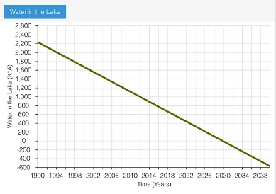
The simulation results from this model indicates water's decline from Mono Lake in a linear fashion. In fact, with these parameters, water is projected to reach zero by 2030 - and continually decline below this "zero line" to -600 by the 2042.
Given the fact that the water in Mono Lake would likely never be in the negative, we can conclude this model is too simplistic. A strictly linear decline does not make for a reliable simulation; the stock-and-flow diagram will need to be expanded to alter its structure and deliver reliable results.
Modeling Mono Lake - A More Realistic Model
In reality, Mono Lake's surface area should shrink as the volume of water in the lake declines. This model takes a more realistic approach by altering Surface Area into an internal variable - one that will parallel a decline in water volume.
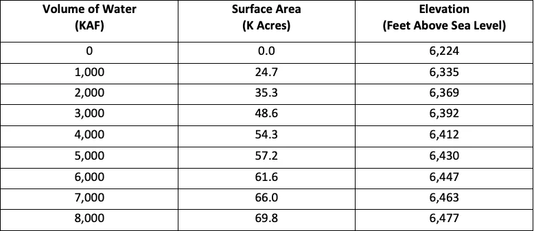
Geological and bathymetric surveys were conducted to calculate the areas associated with varying volumes of water in Mono Lake. Elevation of the lake with the differing volume levels is also included in the survey. From a geographic standpoint, knowing the elevation of the lake is helpful because it indicates a plethora of conditions - like increasing exports impact on the lake. Looking at the extremes, no water in the lake would indicate 6,224 feet above sea level... and 8,000 KAF in the lake would be 6,477 feet above sea level.
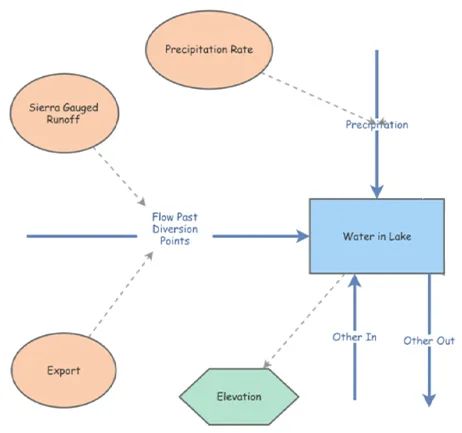
This new model of Mono Lake includes the survey results listed prior. As stated above, 'Surface Area' needs to be an internal variable for our model. This variable, along with the newly added 'Elevation' variable from the survey will take the form of Converters and be directly tied with the amount of water in Mono Lake.
Modeling Mono Lake - The Final Model
After careful observation, it's decided the missing factor for predicting the most accurate model is an accurate change in the rate of evaporation. Mono Lake is a saline lake, meaning the rate of evaporation is slower than fresh lakes. The slower rates of evaporation associated with saline lakes is caused by a reduction in vapor pressure difference between the surface of water and the overlying air. An accurate evaporation rate must take into consideration the large quantities of fixed solids dissolving in the lake's shrinking volume of water.
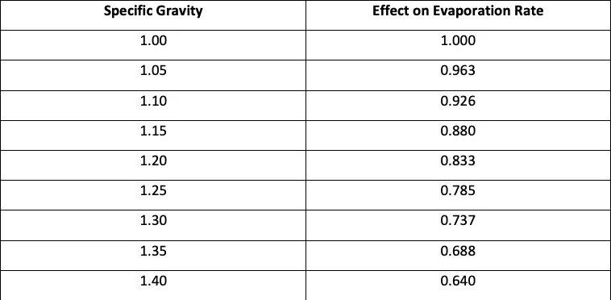
Evaporation studies, also called 'Pan Studies' as pans of water with differing salinities are exposed to evaporation, allow us to present a more realistic understanding of Mono Lake's evaporation rate in association with gravity. The density of water in the lake is represented by 'Specific Gravity' - a measurement that compares the density of saline water to fresh water. For instance, a value of 1.1 indicates Mono Lake's water is 10% heavier than fresh water. The impact of having a higher salinity for evaporation rates is represented by 'Effect on Evaporation Rate.' If the water in Mono Lake is 10% heavier compared to fresh water, for instance, the corresponding evaporation rate would be 92.6% of the rate for fresh water. Through this chart, we see as 'Specific Gravity' increases, the 'Effect on Evaporation Rate' decreases.
'Specific Gravity' is calculated through the following formula: (Water in Lake * Density of Fresh Water + Total Dissolved Solids) / Water in Lake * Density of Fresh Water
The simulation begins with 2,228 KAF of water in the lake. The density of fresh water is 1.359 million tons per KAF, and the total dissolved solids is 230 million tons.
'Specific Gravity' = 2,228 KAF * 1.359 Million Tons per KAF + 230 Million Tons / 2,228 KAF * 1.359 Million Tons per KAF = 1.076
Interpolating from the chart above, we can estimate a Specific Gravity of 1.076 is an evaporation rate of about 94% of the evaporation rate for fresh water.
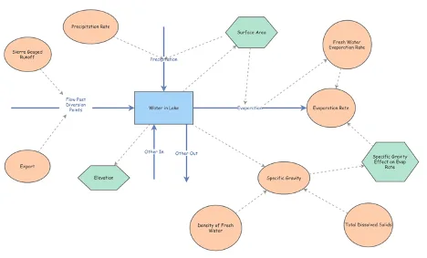
This new model of Mono Lake indicates that the added 'Specific Gravity' variable has a direct correlation on the evaporation rate. The 'Specific Gravity Effect on Evaporation Rate' Converter in the model above represents this relationship. Internal variables like 'Total Dissolved Solids' and 'Density of Fresh Water' have also been added and linked to the 'Specific Gravity' variable.
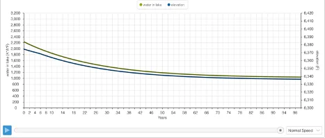
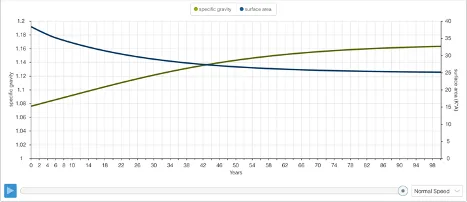
The time graphs above represent 4 variables: Water in Lake, Elevation, Specific Gravity, and Surface Area. The specific gravity simulation (graph 2) begins at 1.076, mirroring our calculation above. The simulation concludes at 1.163. The pattern for elevation (graph 1) parallels the movement of our second simulation for Mono Lake - a gradual decline that eventually reaches dynamic equilibrium. At the end of the simulation, the elevation is 6,336 feet above sea level. That's a 16-foot difference in sea level than in our previous model.
Modeling Mono Lake - A Simulated Buffer Policy Enacted
The Model below simulates an export similar to a real proposal by the Mono Lake Committee. The goal of this simulation is to come up with a realistic range for lake elevation that guarantees the ecosystem's safety. The difference in models is the pre-existing 'Export' variable has been changed to a Converter and linked with the 'Elevation' Converter.
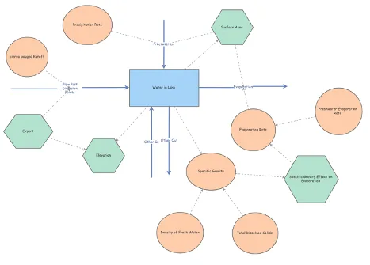
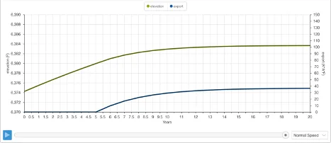
If the elevation is below 6,380 feet, exports are not allowed. If the elevation is above 6,390 feet, 100 KAF/yr is allowed. If the elevation is within our realistic range - a buffer zone, of sorts - export will change in a linear manner.
Modeling Mono Lake - A Simulated Control Board Policy
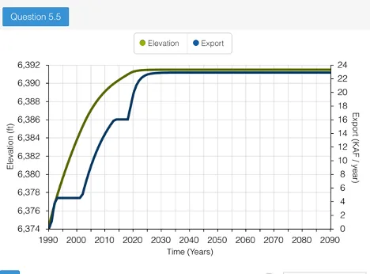
The graph above illustrates the impact of the California Water Resources Control Board's export policy in 1994. The intention of this policy was to allow Mono Lake to reach an elevation near 6,392 feet. This would happen over many years and throughout various stages - hence the jagged shape of the graph. The policy described is as follows: - No export allowed until Mono Lake had an elevation of 6,377 feet - Once at 6,377 feet, exports allowed at 4.5 KAF/yr until elevation reaches 6,390 feet - Exports allowed at 16 KAF/yr until elevation reaches 6,391 feet - Exports allowed at 30.8 KAF/yr if elevation exceeds 6,391 feet
The simulation of this Export Policy is the graph above. Through its progression over a sufficiently long period of time, 100 years, we can deduce the future success of Control Board Policy. If the parameters set for exports of a given elevation level are maintained, the lake will reach dynamic equilibrium.